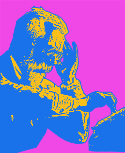
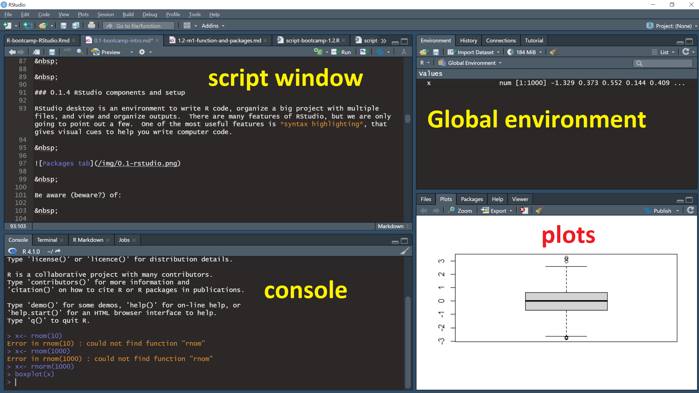

1.1 Setup & intro

0.1 Bootcamp Intro (Your first day with R)
SCRIPT 0.1 You can use this for the practice exercises below (download and open with RStudio).
Overview
This page is intended to guide people during their first installation and use of R and RStudio.
Contents
0.1.1 How Data Science Garage works
0.1.3 Install R and RStudio or set up RStudio Cloud
0.1.4 RStudio components and setup
0.1.1 How Data Science Garage works
Data Science Garage aims to provide practical, open instructional materials. The content is a blend of practical, referenced material with videos and self-assessment. We also a have a friendly community Slack channel - go over and introduce yourself and say hi!
0.1.2 R motivation
The motivation for using R is that it is designed to help people with no programming experience to perform sophisticated statistical analysis with minimum effort. R has grown in popularity over the past few decades and is used extensively by universities, companies and researchers everywhere. R is free and open source. R is easy to learn and works the same for folks with fast and slow computers, no matter what kind of computer they like to use, and it is easy to use via the web on any device.
0.1.3 Install R and RStudio or set up RStudio Cloud
You have two options for following along with these materials as they are intended.
Option 1 Download and install R from CRAN and then download and install RStudio desktop. Install R first, then RStudio. It is probably a idea to go ahead and install the latest version of each if you have older versions installed. If you have a PC or laptop you regularly use, this option is probably best and will work for almost all hardware and operating systems.
Option 2 If you can’t install R or do not wish to, or if you prefer to work in “the cloud”, you may wish to start a free account at RStudio Cloud and follow along that way.
0.1.4 RStudio components and setup
RStudio desktop is an environment to write R code, organize a big project with multiple files, and view and organize outputs. There are many features of RStudio, but we are only going to point out a few. One of the most useful features is syntax highlighting, that gives visual cues to help you write computer code.

Be aware (beware?) of:
The Script window
The script window is located in the upper right of the RSTUDIO console by default. You may need to open a script or start a new one: File > New File > R Script (hotkey Ctrl+Shift+N). The script window is where you are likely to spend most of your time building scripts and executing commands you write. You can have many scripts open at the same time (in “tabs”), and you can have different kinds of scripts, e.g., for different programming languages.
The Console window
The Console window is in the lower left by default. Notice there are several other tabs visible, but we will only mention the Console for now. The Console is the place where text outputs will be printed (e.g. the results of statistical tests), and also is a place where R will print Warning and Error messages.
The Global Environment
The Global Environment is in the Environment tab in the upper right of RStudio by default. This pane is useful in displaying data objects that you have loaded and available.
The Plots window
The Plots window is a tab in the lower right by default. This is the place where graphics output is displayed and where plots can be named, resized, copied and saved. There are some other important tabs here as well, which you can also explore. When a new plot is produced, the Plots tab will become active.
0.1.5 Workflow for R scripts
Script setup
An R script is a plain text file that ends in “.R” by default.
An R script serves several purposes. First, it documents your analysis allowing it to be reproduced exactly by yourself (your future self!) or by others like collaborators, friends, colleagues, your professor, your student, etc. Second, it is the interface between your commands and R software.
A goal is that your R scripts should contain only important R commands and information, in an organized and logical way that has meaning for other people, maybe for people you have never spoken to. A typical way to achieve this is to organize every script according to the same plan. Although there are many ways to achieve this, for the purposes of the Bootcamp we strongly encourage you to organize you scripts like this:
* Header
* Contents
* Section for each item of contents
Header
Start every script with a Header, that contains your name, the date of the most recent edit, and a short description of the PURPOSE of the script.
# A typical script Header
## HEADER ####
## Who: <your name>
## What: My first script
## Last edited: yyyy-mm-dd (ISO 8601 date format... Google it!)
####
Contents
A Contents section should also be present near the top, to provide a road map for the analysis.
# A typical script Contents section
## CONTENTS ####
## 00 Setup
## 01 Graphs
## 02 Analysis
## 03 Etc
Section for each item of contents
Finally, code chunk breaks should be used to aid the readability of the script and to provide a section for each item in your table of contents. A code chunk is just a section of code set off from other sections.
# Below is the beginning of a typical code chunk in RStudio
# The line must start with at least one hash sign "#",
# should have a title of code chunk contents,
# and end with (at least) four hash signs "####"
# The title should be descriptive of the content
# (and consecutively numbered titles makes things very tidy)
## 01 This here is the first line of MY CODE CHUNK ####
We will practice each of these components.
Comments
Comments are messages that explain code in your script, and they should be used throughout every script. You can think of comments like the methods section of a scientific paper - there should be enough detail to exactly replicate and understand the script, but it should also be concise.
# Make a vector of numbers
my_variable <- c(2,5,3,6,3,4,7)
# Calculate the mean of my_variable
mean(my_variable)# [1] 4.285714
Submitting commands
A final thing that must be mentioned here is how to actually submit commands in your R script for R to execute. There are a few ways to do this. The easiest way to run the line of code your cursor is on (or code you have selected with your cursor), is with the hotkey Ctrl+Enter (Cmd+Return in Macs). You can also use the “Run” key along the top of the Script window, or from the menu Code > Run Selected Line(s).
0.1.6 Practice exercises
1 Download this script and open it with RStudio. Read the script comments and examine the structure of the code chunks. Run the code in the script using one of the methods above, and examine the output in the Console window.
2 Add a code chunk title to your CONTENTS section and to your script. Make sure to write brief comments for your code. Add the following code to your chunk run it and examine the output:
# Create a new variable
my_variable <- c(6.5, 1.35, 3.5)
# Calculate the mean of my_variable
mean(my_variable)
# Calculate the standard deviation of my_variable
sd(my_variable)Harper Adams Data Science

This module supports the MSc in Data Science for Global Agriculture, Food, and Environment and other MSc programmes at Harper Adams University, led by Ed Harris.